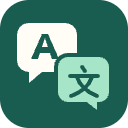

双语翻译器
把世界新闻，读成双语
翻译服务
检查中…
按需开启 · 不随电脑开机启动
翻译来源
ChatGPT
Antigravity · ACP
正在连接本地助手…
账号与设置
重新连接
检查安装
连接 Antigravity
手动连接（高级备用）
本机连接码
连接
打开本地助手 ↗
翻译模型
正在加载模型…
YouTube 字幕大小
100%
默认
实时生效并保存，全屏继续按比例放大
翻译当前页 / 视频
快捷键：⌥E · 按需启动服务并翻译
停止并恢复原文
订阅剩余额度
开启服务后查看
刷新额度
当前页累计 Token
—
今日 Token
—
开启服务后查看用量